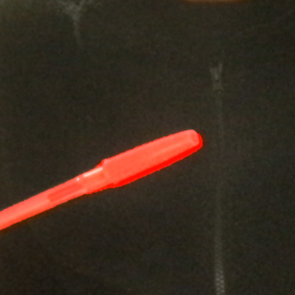
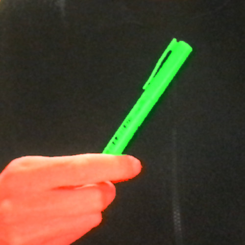

Now that we know everything we need to know about images, what about videos?
Well, a video is just a bunch of images, one after the other, so it should be pretty similar to load and process videos.
In this example we load a video from a specific URL (our sketch’s directory) by first creating a <video> html element, and then hiding it. This is the easiest way to load video files into p5.js and have access to its frames. We just have to remember to hide the video element once we’ve loaded the file:
Now, accessing and manipulating the video frame pixel data can be done using the exact same logic we used to manipulate image pixels.
Let’s detect black pixels and make them red. Since we are treating all the pixels the same way, we don’t have to worry about their \((x, y)\) locations and we can just use one for() loop.
This gets the R, G and B color values for each pixel within out for() loop:
let r = mVideo.pixels[i + 0];
let g = mVideo.pixels[i + 1];
let b = mVideo.pixels[i + 2];
And if all \(3\) of those values are close to \(0\), we’ll exaggerate the red channel:
if(r < 64 && g < 64 && b < 64) {
mVideo.pixels[i + 0] += 191;
}
We can also get a video stream from our camera. The process is very similar. We use a <capture> html element that we can access with p5.js code, and then hide the actual html element:
Once we have a capture object, we just call image() with it to draw one frame of video per frame of our sketch.
Easy.
And, just like images, the capture object has a pixel array and similar member functions and variables, so we can just copy and paste some of the code from one of the previous sketches into this sketch:
And we have a color exaggerator.
It’s a little bit harder to figure out the dominant color channel in a video or picture, compared to an image of a painting. There’s a lot of noise, but when we hold up red, green or blue markers against a black background, we can see it’s working:


And, now, finally, let’s copy our circle pattern code, but use pixel color values that are coming from the camera to draw our circles: